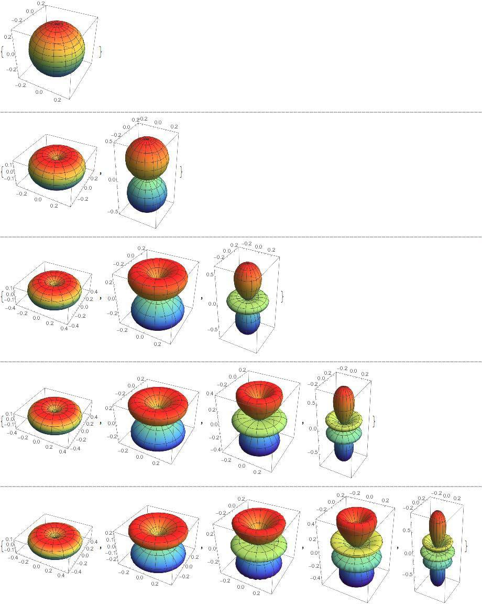

Çoğumuz lisede kimyada duymuştur, s orbitali p orbitali diye. İnternette ya da kitaplarda da garip garip şekillerini görmüşüzdür. Ekte basitleştirilmiş olarak ilk 5 açısal momentum orbitallerinden bazılarının resmini paylaşıyorum.
Bilmeyenler için olay şu: En basit atom modeli olan Bohr atom modeline göre elektronlar çekirdek etrafında döner. Ama kuantum fiziğine göre bu doğru değildir. Bu modelin biraz geliştirilmiş versiyonuna göre atomda elektronların konumları ya da hızları belirli değildir. Fakat konumlarının olasılıkları belirlidir. Bir elektronun atomda nerede olacağını belirleyen olasılık dağılımları da atomların açısal momentumları ile ilişkilidir. İşte bu açısal momentuma göre de farklı şekiller çizilir elektronun bir yerde olma olasılığı bu şekillere göre atoma dağılıyor diye. Ekteki resimdekiler de açısal momentumu 0,1,2,3 ve 4 olan elektronlar için kabaca olasılık dağılımı.
NOT 1: Bunu biraz da programlamaya motivasyon olarak düşünebilirsiniz. Bütün bu resmi hesaplaması çizmesi ve resim olarak kaydetmesi sadece şu kod:
Export["resim.jpg",Column[Riffle[Table[Table[SphericalPlot3D[
Abs[SphericalHarmonicY[#, m, \[Theta], \[Phi]]], {\[Theta], 0, Pi},
{\[Phi], 0,2 Pi}, ColorFunction -> "Rainbow"],{m, -#, 0}] &[i],
{i, 0, 4}], StringJoin[Table["_", 120]]]]]
Ben Mathematica kullanıyorum, bu kod da Mathematica kodu. Fakat herhangi bir dil öğrendikten sonra bu tarz şeyleri kendiniz de yapabilirsiniz. Bu paylaşım en azından bazılarınıza dil öğrenmek için şevk verir diye umuyorum
NOT 2: İlgilenenler için matematiksel olarak aslında fonksiyonunu
çizdirdiğim şey y küresel harmoniklerinin mutlak değerleri. l olarak
açısal momentumu aldım, m olarak da -l ile 0 arasındakileri çizdirdim.
